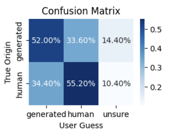
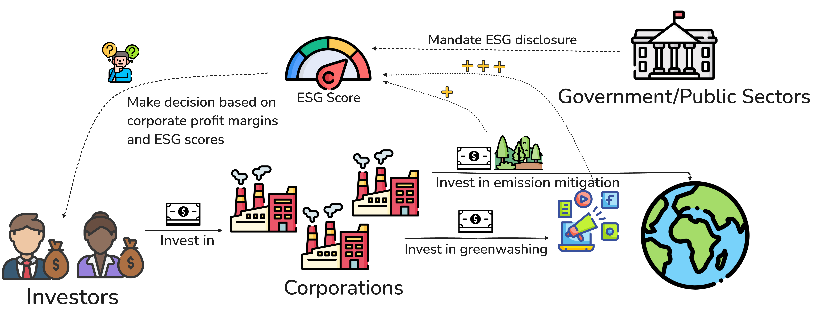
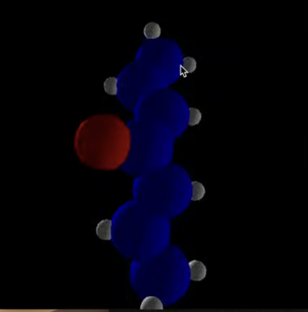

|
Carrie Yuan I am an first year PhD student at the University of Washington, Allen School of Computer Science and Engineering, starting Fall 2025. I am fortunate to be supervised by Prof. Natasha Jaques. Previously I was a Software Development Engineer II at Amazon AGI Data Prep team, focusing on developing data preparation tools and infrastructure used for large language model (LLM) training. I graduated from Carnegie Mellon University with a B.S. in Neuroscience and Computer Science (Fun fact: I was the only person graduated with a second major in CS in the Neuroscience department). Email | CV | LinkedIn | Twitter | Github | Research Philosophy |

|
|
|
ResearchI am broadly interested in reinforcement learning, multiagent learning, and robotics. . |
|  |
Generating Piano Music with Transformers: A Comparative Study of Scale, Data and Metrics
Jonathan Lehmkuhl*, Ábel Ilyés-Kun*, Nico Bremes*, Cemhan Kaan Özaltan*, Frederik Muthers*, Jiayi Yuan NeurIPS 2025 Workshop: AI4Music Although a variety of transformers have been proposed for symbolic music generation in recent years, there is still little comprehensive study on how specific design choices affect the quality of the generated music. In this work, we systematically compare different datasets, model architectures, model sizes, and training strategies for the task of symbolic piano music generation. To support model development and evaluation, we examine a range of quantitative metrics and analyze how well they correlate with human judgment collected through listening studies. Our best-performing model, a 950M-parameter transformer trained on 80K MIDI files from diverse genres, produces outputs that are often rated as human-composed in a Turing-style listening survey. Keywords: music information retrieval, music generation, transformer, symbolic music |
|  |
InvestESG: A multi-agent reinforcement learning benchmark for studying climate investment as a social dilemma
Xiaoxuan Hou*, Jiayi Yuan*, Joel Z Leibo, Natasha Jaques ICLR 2025 NeurIPS 2024 Workshop on Tackling Climate Change with Machine Learning We introduced, InvestESG, a novel multi-agent reinforcement learning (MARL) benchmark designed to study the impact of Environmental, Social, and Governance (ESG) disclosure mandates on corporate climate investments. The benchmark models an intertemporal social dilemma where companies balance short-term profit losses from climate mitigation efforts and long-term benefits from reducing climate risk, while ESG-conscious investors attempt to influence corporate behavior through their investment decisions. Keywords: multi-agent reinforcement learning, climate change, ai for climate |
|
CASHER: Robot Learning with Super-Linear Scaling
Marcel Torne Villasevil*, Arhan Jain*, Jiayi Yuan*, Vidyaaranya Macha*, Lars Lien Ankile, Anthony Simeonov, Pulkit Agrawal, Abhishek Gupta RSS 2025 RSS Data Generation for Robotics (DGR) Workshop 2024 We propose Crowdsourcing and Amortizing Human Effort for Real-to-Sim-to-Real (CASHER), a pipeline for scaling up data collection and learning generalist policies where human effort scales sublinearly with the number of environments where data is collected. The key idea is to crowdsource digital twins of real-world scenes using 3D reconstruction techniques and collect large-scale data in these simulation scenes, rather than in the real-world. Data collection in simulation is initially driven by reinforcement learning bootstrapped with human demonstrations. Keywords: Data Scaling in Robotics; Reinforcement Learning; Grasping and Manipulation |
Course Projects |

|
Emonition
A system for emotion and personality detection in open-domain dialogue FETA-Friends dataset. Keywords: Natural language processing, sentiment analysis, personality detection. |

|
Multi-documents summarization system
We use shallow and deep language processing techniques to preprocess the texts and apply some popular summarization methods such as Log-Likelihood Ratio (LLR), SumBasic, and LexRank in our multi-text summarization system. We evaluate our results with popular metrics such as ROUGE score, as well as human evaluation. Keywords: Natural language processing, summarization. |
|  |
Hydrocarbonia!
A molecule visualiser allowing the user to generate a 3-D view of an organic molecule and to play a game to improve the command of knowledge in organic chemistry. Keywords: 3D Modeling, Computational Chemistry |
|
Jaja: a MATLAB-implemented Texas Hold'em Player AI
A MATLAB-implemented Texas Hold'em Player AI. Course project for CMU 85213 Human Information Processing and Artificial Intelligence. Beated all the player implementation in the class. Keywords: Probability, Game theory |
AwardsAmazon AGI DataPrep Team, Peer Recognition Awards, 2023 Amazon AGI DataPrep Team, Peer Recognition Awards, 2022 Carnegie Mellon University, University Honor (summa cum laude), 2021 Summer Undergraduate Research Fellowships (SURF), 2019 |
ServicesReviewer: AMLC(2024), ICML(2025), ICLR(2026) WEIRDLab Tutorial Organizer, 2024 GPSS Senator of Paul G. Allen Center for Computer Science & Engineering DUB Community Day Session Chair Allen School Pre-Application Mentorship Service (PAMS) Mentor |
Research PhilosophyI like to model everything. Some might call a reductionist. But I cannot resist the appeal of describing the mundane everyday complex phenomenons, such as weather, grocery price, or interpersonal relations, in terms of elegant mathematical symbols and functions with certain input space and output space. Studying computer science and mathematics allows me to do that in a more rigorous fashion. It teaches me a language to describe a problem space so that my ideas can be communicated universally. Studying neuroscience allows me to see both the complexiticity and simplicity of the world I live in. We can describe our minds as simple as an ensemble of electrical pulses, but the complexity lies in that our coordination, our neuroplasticity and biological efficiency (compared to its power-hungry machine counterpart). I believe that real science does not have boundary of subjects. There are techniques, or tools, (I like to imagine things in a visual sense) that might be potentially helpful to solve a problem, and these tools might be labeled with academic subjects such as mathematics, economics, cognitive science, psychology, biology and physics. We should be open to learn to any tools that would be useful to our goal. |
Also, check out my friends:
|
|
Template is from Jon Barron's website. |